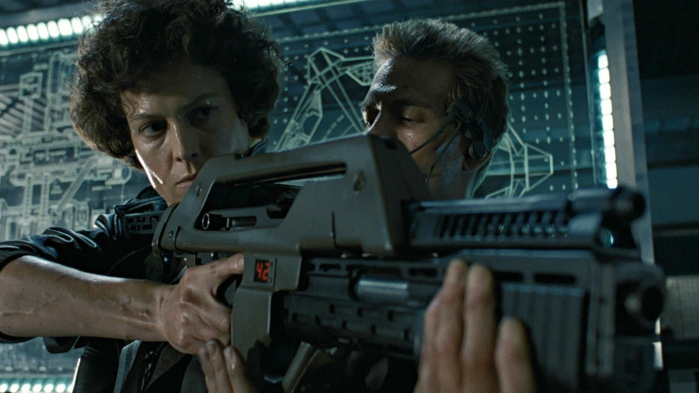

Aliens
This time it's war
Synopsis
The greatest movie of all time. 57 years after Ellen Ripley had a close encounter with the reptilian alien creature from the first movie, she is called back, this time, to help a group of highly trained colonial marines fight off against the sinister extraterrestrials. But this time, the aliens have taken over a space colony on the moon LV-426.
When the colonial marines are called upon to search the deserted space colony, they later find out that they are up against more than what they bargained for. Using specially modified machine guns and enough firepower, it's either fight or die as the space marines battle against the aliens. As the Marines do their best to defend themselves, Ripley must attempt to protect a young girl who is the sole survivor of the decimated space colony.
Find out more on IMDB.com
Burke: Hold on, hold on just a second. This installation has a substantial dollar value attached to it.
Ripley: They can *bill* me.
Script
Silent and endless. The stars shine like the love of God...cold and remote. Against them drifts a tiny chip of technology. CLOSER SHOT It is the NARCISSUS, lifeboat of the ill-fated star-freighter Nostromo. Without interior or running lights it seems devoid of life. The PING of a RANGING RADAR grows louder, closer. A shadow engulfs the Narcissus. Searchlights flash on, playing over the tiny ship, as a MASSIVE DARK HULL descends toward it.
Awards
- Academy Awards
- Sound Effects Editing
- Visual Effects
- BAFTA
- Visual Effects
- Saturns
- Best Science Fiction Film
- Best Actress (Sigourney Weaver)
- Best Supporting Actor (Bill Paxton)
- Best Supporting Actress (Jeanette Goldstein)
- Best Performance by a Younger Actor (Carrie Henn)
- Best Direction (James Cameron)
- Best Writing (James Cameron)
- Best Special Effects
Cast
| Name | Role |
|---|---|
| Sigourney Weaver | Ripley |
| Carrie Henn | Newt |
| Michael Biehn | Corporal Hicks |
| Paul Reiser | Burke |
| Lance Henriksen | Bishop |
| Bill Paxton | Private Hudson |